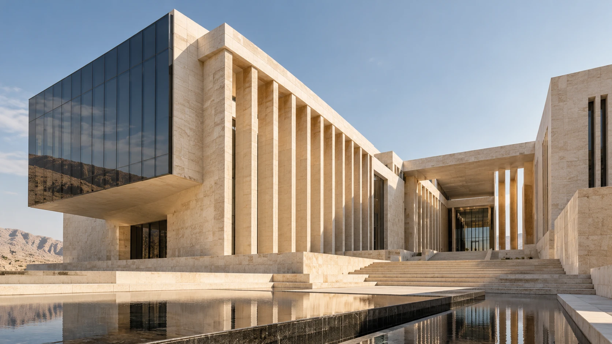
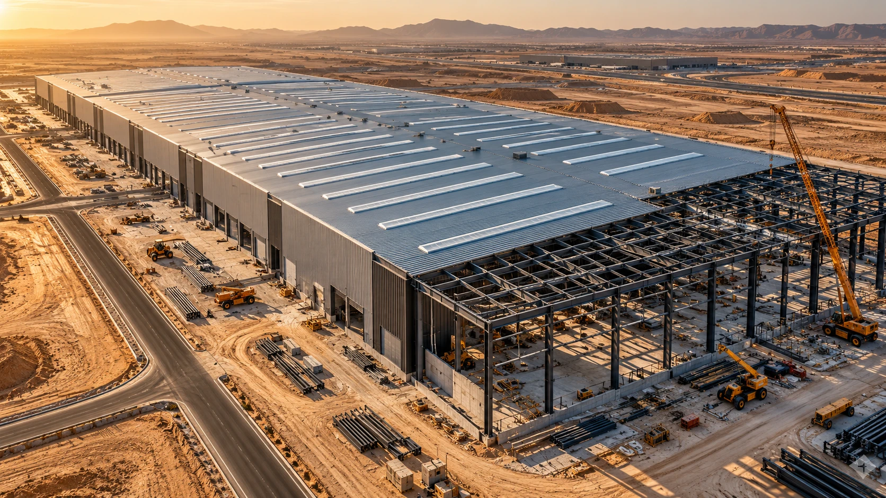

مجمع النيل للأعمال
2025 / مكتمل افتراضياً
استعرض نطاق المشروع
المقاول العام: الهيكل الخرساني والتشطيبات وتنسيق الأنظمة. المساحة الافتراضية: 18,000 م².
الفكرة هندسة. والتنفيذ حرفة.
نحوّل دقة التخطيط إلى مساحات تستحق البقاء. بانوراما — شريكك في البناء من الفكرة إلى التسليم.
استكشف أعمالنا
01 / أعمال مختارة
ثلاث حكايات عن البناء. جميع المشروعات والمعلومات هنا افتراضية للمقارنة التصميمية.
2025 / مكتمل افتراضياً
المقاول العام: الهيكل الخرساني والتشطيبات وتنسيق الأنظمة. المساحة الافتراضية: 18,000 م².

قيد التنفيذ افتراضياً
تصميم وتنفيذ الهياكل المعدنية ومناطق التخزين والمرافق التشغيلية، ضمن مشروع تجريبي غير حقيقي.
2024 / مكتمل افتراضياً
شبكات مرافق وأعمال مدنية وطرق داخلية. الصورة تصور إنشائي عام، وليست توثيقاً لهذا المشروع الافتراضي.
02 / حكاية تُبنى كل يوم
المبنى الجيد لا يبدأ بالخرسانة. يبدأ بفهم الطموح، وبفريق يعرف كيف يجعل التفاصيل تعمل معاً.
بانوراما شركة مقاولات مصرية: شريك واضح في تخطيطه، منضبط في تنفيذه، ومسؤول عن أثره.
03 / من الأساس إلى الأثر
خدمات افتراضية لتوضيح تجربة الموقع. يُؤكّد النطاق الفعلي قبل أي إنتاج.
نطاق متكامل يبدأ بتجهيز الموقع، ويمر بالأعمال الإنشائية والتشطيبات، ويصل إلى التسليم.
ناقش متطلباتكمسار واحد يربط القرار التصميمي بإمكانات التنفيذ، ومتطلبات البرنامج، واحتياجات الاستخدام.
ناقش متطلباتكعناية بالتفاصيل المعمارية وتنسيق الأنظمة الكهروميكانيكية، لتعمل المساحات كما ينبغي.
ناقش متطلباتك04 / في كل مرحلة، نتحمّل المسؤولية
01تخطيط واضح ومراجعة مخاطر التنفيذ
02سلامة الموقع وفحص المواد والأعمال
03توثيق ومراجعة واستكمال متطلبات التسليم
05 / المساحة التالية، تبدأ هنا
أخبرنا عن مشروعك. هذا نموذج محلي تجريبي؛ لا تُرسل أو تُحفظ أي بيانات.
مصر / عنوان الشركة يُستكمل لاحقاً
hello@panorama.example